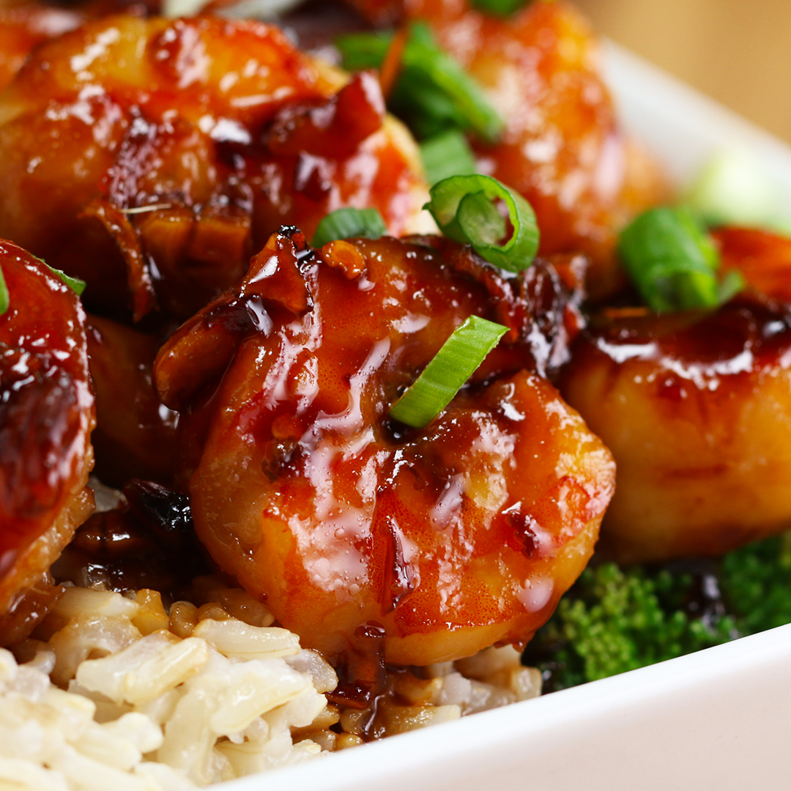
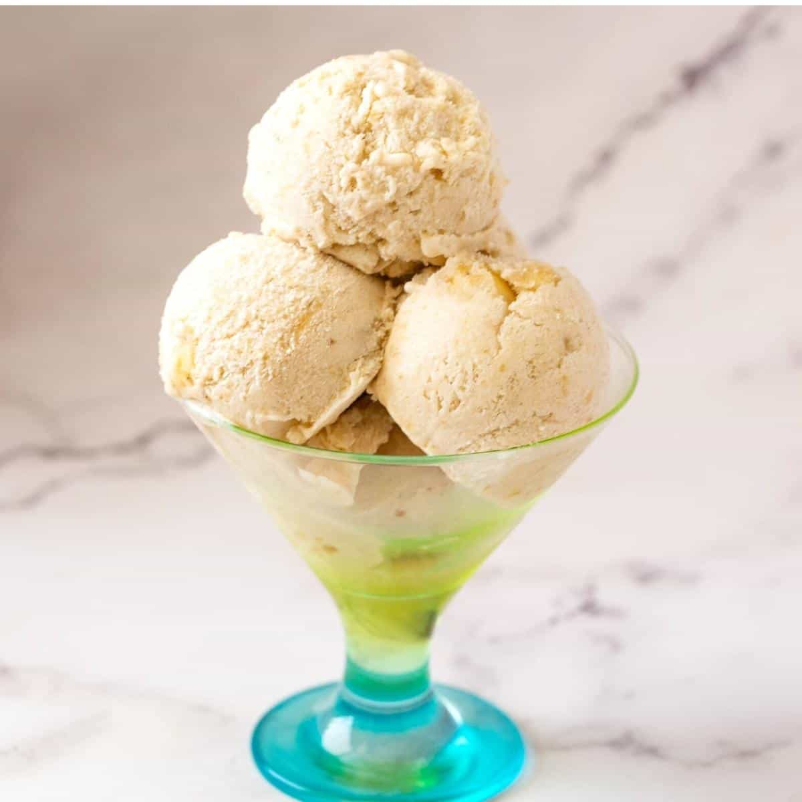

<!DOCTYPE html>
<html lang="en"></html>
    <head>
        <meta charset="UTF-8">
        <title> Collection of my recipes</title>
    </head>
    <body>
        <p>This is a collection of my favorite recipes, some I came up with myself, and others I had some inspiration</p>
        <h1>Assortment of prawn recipes</h1>
        <h2>Honey garlic prawns</h2>
        
        <h3> Ingredients:</h3>
        <ul>
            <li>300g prawns, deveined</li>
            <li>3 tablespoons soy sauce</li>
            <li>4 cloves of garlic</li>
            <li>2 tablespoons of Honey</li>
            <li>1 tablespoon water</li>
        </ul>
        <h3>Instructions</h3>
        <ol>
            <li>Add some oil to a pan, any type will work</li>
            <li>Heat to high heat</li>
            <li>Before adding the prawns, lower the temperature to medium</li>
            <li>Add the prawns into the pan, fry until pink on the outside</li>
            <li>Add in the crushed garlic, fry until fragrant.</li>
            <li>Add in the soy sauce, honey, and water. bring to simmer and cook for 3 minutes or until thickened</li>
            <li>Serve with rice</li>
        </ol>
        <h1>Banana ice cream</h1>
        
        <h2>Ingredients</h2>
        <ul>
            <li>3 cups frozen bananas </li>
            <li>1-2 tablespoons of honey</li>
            <li>1-2 tablespoons milk</li>
            <li>Half a cup chopped walnuts(optional)</li>
        </ul>
        <h2>Steps</h2>
        <ol>
            <li>Put all the Ingredients into a blender</li>
            <li>Blend until smooth</li>
            <li>Scoop into container and fold in walnuts</li>
        </ol>
    </body>
    
</html>